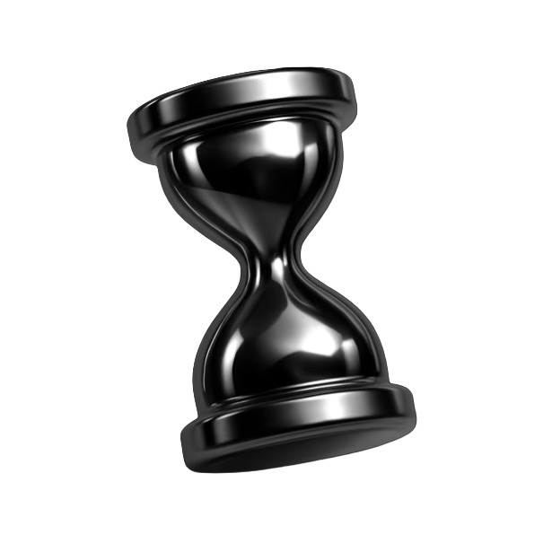
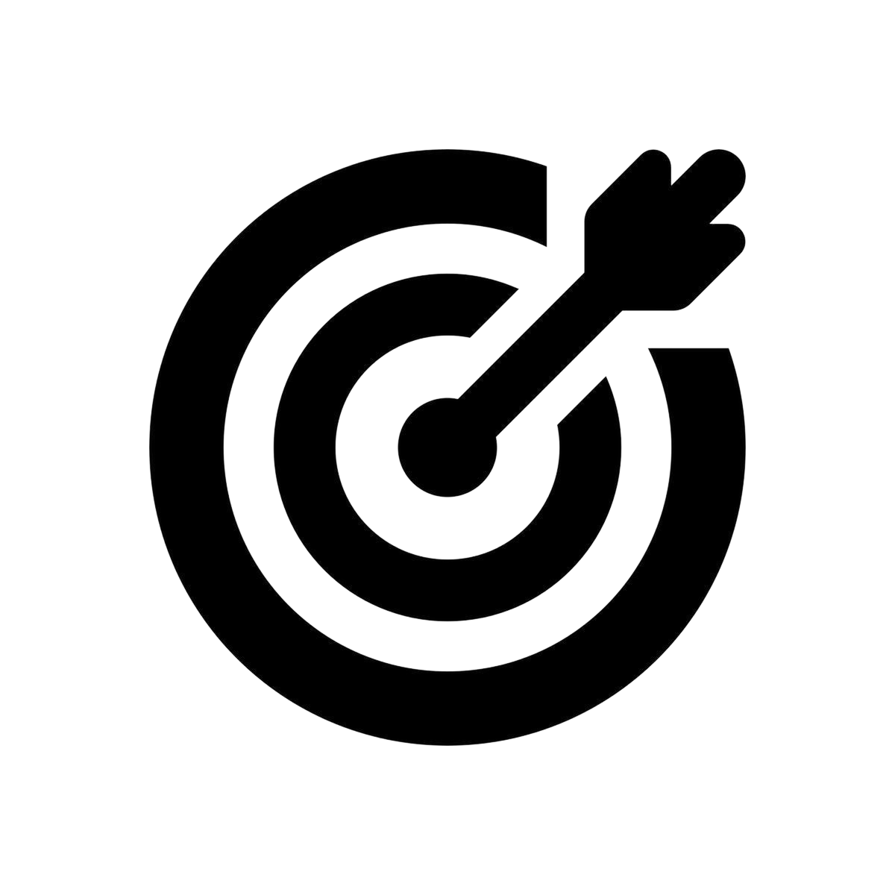
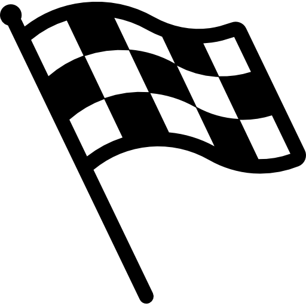
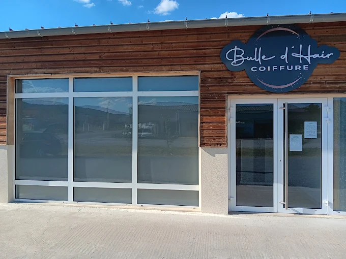
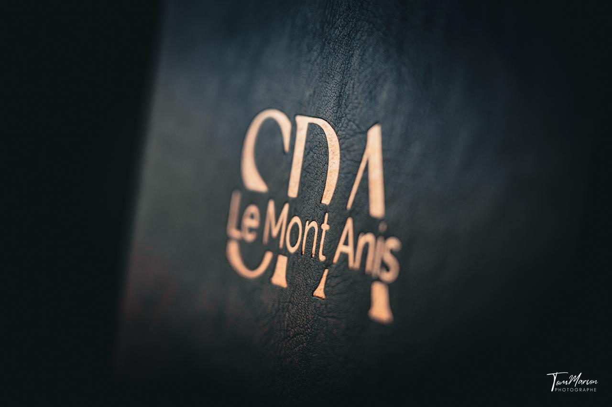
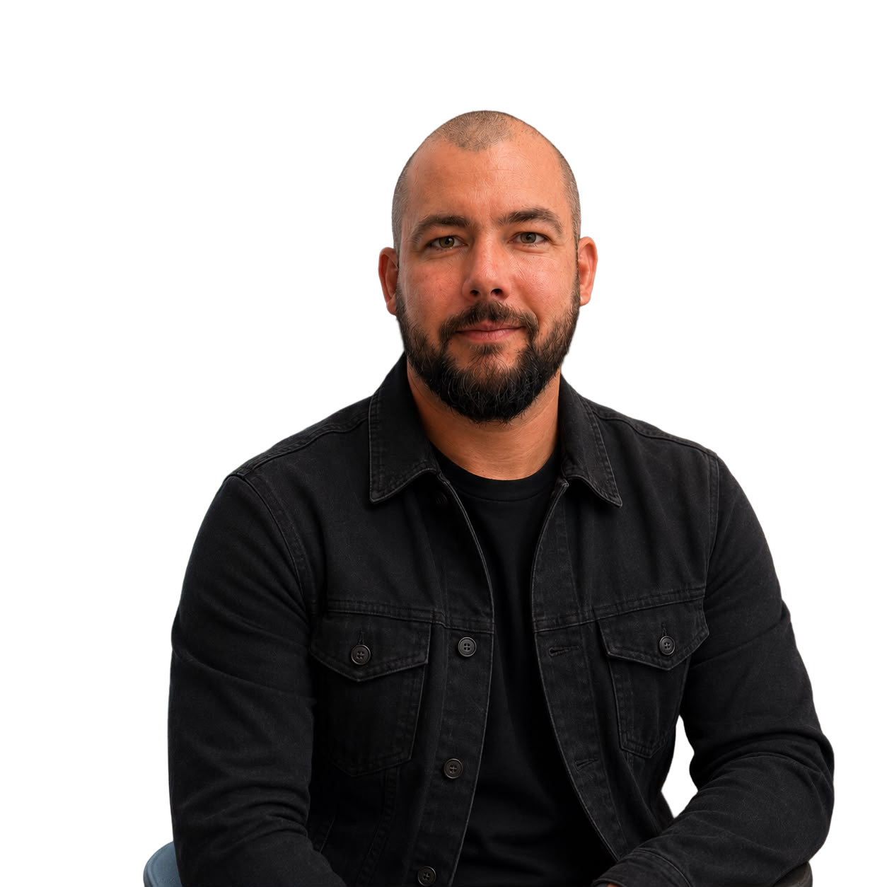

NextyLab
mobile
Automatisez ce qui vous ralentit.
Gardez la main sur votre métier.
NextyLab conçoit des logiciels, automatisations et agents IA adaptés au fonctionnement réel des entreprises locales. On commence par un diagnostic gratuit, sans jargon ni solution imposée.
Votre entreprise perd du temps dans ses process.
Appels à rappeler, informations recopiées, dossiers dispersés, relances oubliées : chaque geste paraît minime. Répétés chaque semaine, ils ralentissent l’équipe et le suivi client.
ChatGPT
Demander à GPT
ChatGPT répond. Il ne fait pas tourner vos opérations.
Un outil conversationnel peut vous aider ponctuellement. Mais si vous devez encore copier les données, relancer chaque demande et déclencher chaque action, le travail reste chez vous.
Une automatisation utile s’intègre à vos outils et agit au bon moment, selon vos règles.
Gestion de documents
Saisie de données
Planification RDV
Reporting
Relances
C’est précisément le rôle de NextyLab.
Partir de votre quotidien, isoler une friction concrète, puis construire la solution la plus simple qui puisse réellement l’enlever.
Une solution conçue autour
de votre façon de travailler.
Logiciels sur mesure.
Un outil simple pour centraliser une opération précise que vos logiciels actuels gèrent mal.

Automatisations.
Vos outils échangent les bonnes informations et déclenchent les tâches répétitives sans double saisie.
Agents IA.
Un assistant spécialisé répond, trie ou prépare une action selon les règles de votre entreprise.
Du diagnostic à une première solution utile.
Notre méthode :
Audit.
Nous observons une tâche concrète, ses étapes, ses outils et le temps qu’elle mobilise.
Priorisation.
Nous comparons impact, faisabilité et coût avant de vous recommander quoi que ce soit.
Conception ciblée.
Nous construisons une première solution limitée, puis nous l’ajustons avec vos retours.

Commencer petit
Un problème précis, un périmètre clair et une solution que votre équipe peut réellement utiliser.

Décider sur du concret
Vous savez ce qui peut être simplifié, ce que cela implique et si le projet mérite d’aller plus loin.
Trois projets locaux. Trois besoins concrets.
Des solutions étudiées ou réalisées en Haute-Loire.

Bulle d’hair - pilote
Salon · Saint-Vincent
Pilote en préparation : une standardiste vocale pour les appels manqués et les rendez-vous.

SPA du Mont Anis
Le Puy-en-Velay
Un outil de gestion sur mesure, exploité avec un abonnement mensuel.
Office de tourisme
Le Puy-en-Velay
Un outil métier sur mesure pour centraliser l’acquisition et les données.
Deux profils. Une même exigence.
Thomas

Tom
Conçoit et structure des produits digitaux depuis 2019.
Développe des logiciels sur mesure et des projets e-commerce depuis 2017.
Ce que vous devez savoir avant de nous contacter.
Je ne sais pas par où commencer...
C’est justement le point de départ. Le diagnostic sert à isoler un problème utile avant de parler d’outil.
Je ne veux pas tout changer.
Nous partons de vos outils actuels et d’un périmètre limité. Rien n’est remplacé sans raison.
J’ai peur que l’IA déshumanise la relation.
Nous automatisons les tâches répétitives. Les décisions sensibles et les échanges importants restent humains.
Vos dernières questions.
Combien de temps prend le premier échange ?
Environ 30 minutes. L’objectif est de comprendre une situation précise, pas de vous vendre une solution toute faite.
Dois-je déjà savoir quelle solution je veux ?
Non. Venez avec un problème, une tâche répétitive ou une opération qui vous ralentit.
Que se passe-t-il après le diagnostic ?
Vous recevez une synthèse des pistes possibles, classées par utilité et complexité. Vous restez libre de poursuivre.
Travaillez-vous avec mes outils actuels ?
C’est notre point de départ. Nous vérifions d’abord ce qui peut être connecté, simplifié ou mieux utilisé.
Comment sont traitées mes données ?
Le périmètre, l’hébergement et les accès sont définis avant tout développement. Rien n’est utilisé sans votre accord.
Réservez dès maintenant
votre audit offert.
9:41
Monday, June 6
9:41
Do Not Disturb